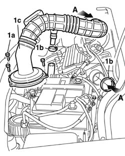
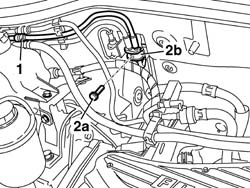
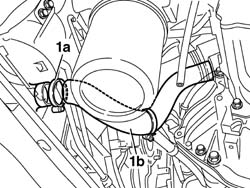
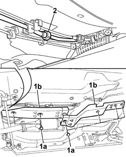
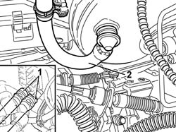
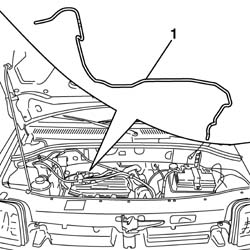

1080E59 Fuel vapour PIPE from INTERMEDIATE pipe to ACTIVE CHARCOAL FILTER - R.R.
- Path
- Procedures > 10 ENGINE > 1080 EMISSION CONTROL SYSTEM > 1080E EVAPORATION CONTROL SYSTEM > 1080E59 Fuel vapour PIPE from INTERMEDIATE pipe to ACTIVE CHARCOAL FILTER - R.R.
- Kind
- repair procedure (removal / refitting; the operation number is the code)
- Applies to
- engines: 1.4 8v, 1.6 16v; all production periods
- Interactive page
- https://sloeber94.github.io/elrnDB-fDbl/en/#/2584370
Applies to: engines: 1.4 8v, 1.6 16v; all production periods
 Removing
Removing
 Refitting
RefittingPlace the car on a lilft.
Disconnect the battery negative terminal.
1. Unscrew bolts (1a), disconnect bands (1b), then raise air filter cover (1c) with air sleeve and remove.

Applies to: engines: 1.4 8v, 1.6 16v; all production periods
1. Disconnect the fuel vapour recover pipe quick-release fitting.
2. Unscrew bolt (2a) securing bracket (2b) fastening the fuel delivery pipe and evaporation control system pipe to the passenger compartment/engine bay separation bulkhead.

Applies to: engines: 1.4 8v, 1.6 16v; all production periods
Op. 3340B56 RIGID PIPE FROM HYDRAULIC CONTROL UNIT TO RIGHT FRONT BRAKE - R.R..
Raise the car on a lift.
Op. 7055B54 PROTECTION/GUARD UNDER ENGINE - R.R..
1. Arrange a suitable container beneath the car, then remove band (1a) and disconnect sleeve (1b) to drain the engine cooling system.

Applies to: engines: 1.4 8v, 1.6 16v; all production periods
1. Turn retaining pins (1a) and remove protections (1b) from the evaporation control system pipe and fuel delivery pipe.
2. Disconnect the quick-release fitting joining the pipe from the carbon filter to the intermediate evaporation system pipe.

Applies to: engines: 1.4 8v, 1.6 16v; all production periods
Lower the car on the lift.
1. Disconnect the engine coolant supply and return pipes from the car interior heater.
2. Disconnect the vacuum intake pipe from the brake servo.

Applies to: engines: 1.4 8v, 1.6 16v; all production periods
1. Release the evaporation control system pipe from activated carbon filter from the retaining bands and remove it from the engine compartment.

Applies to: engines: 1.4 8v, 1.6 16v; all production periods
Refitting
RemovingFit the evaporation control system pipe from activated carbon filter in the engine bay in such a way as to prevent kinks or twists in the pipe.
Secure the evaporation control system pipe to the engine bay/passenger compartment bulkhead and secure with a collar.
Connect the vacuum intake pipe to the brake servo.
Connect the coolant supply and return pipes to the car interior heater.
Raise the vehicle on the lift.
Connect the quick-release fitting joining the pipe from activated carbon filter to the intermediate evaporation control system pipe.
Fit the protections for the evaporation system pipe and fuel delivery pipe and secure with fastening pins.
Connect the engine cooling system sleeve to the radiator and secure with a retaining band.
Op. 7055B54 PROTECTION/GUARD UNDER ENGINE - R.R..
Lower the vehicle on the lift.
Op. 3340B56 RIGID PIPE FROM HYDRAULIC CONTROL UNIT TO RIGHT FRONT BRAKE - R.R..
Secure the fuel delivery pipe and evaporation control system pipe to the engine bay/passenger compartment bulkhead by doing up the retaining bracket bolt.
Connecct the fuel vapour recovery pipe quick-release fitting.
Fit the air cleaner case cover and connection sleeve to the throttle body.
Connect the battery negative terminal lead.
Op. 0010T20 ENGINE COOLANT - CHANGE.
Remove the car from the ramp.